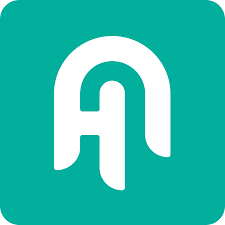
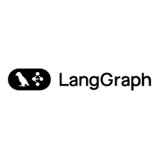

Idun Agent Platform
Build, deploy, and manage AI agents across multiple frameworks
pip install idun-agent-engine




Why Idun?
The AI agent ecosystem is fragmented. Each framework has its own deployment patterns and monitoring solutions. Idun provides a consistent layer over different agent frameworks—configure once, deploy anywhere. We handle deployment, observability, and scaling so you can focus on building better agents.
Work with Haystack, LangGraph, CrewAI, and more through a single unified interface
Control all your agents via CLI or web dashboard from one place
Monitor performance with Phoenix and Langfuse integration out of the box
Define agents using straightforward YAML files with no complexity
What is Idun?¶
Idun Agent Platform solves the fragmentation problem in AI agent development. Each framework (LangGraph, Haystack, ADK) has its own deployment patterns, observability solutions, and operational requirements. Idun provides:
A unified configuration interface - Define agents using YAML files that work across all supported frameworks
Production-ready infrastructure - Built-in checkpointing, observability, guardrails, and MCP server integration
Flexible deployment - Run locally for development, deploy to self-hosted infrastructure, or use managed cloud
Framework-agnostic tooling - CLI and web dashboard work consistently across all agent types
Why Choose Idun?¶
Multi-Framework Support
Deploy LangGraph graphs, Haystack pipelines, and ADK agents through a single unified interface. Switch frameworks without changing your deployment pipeline or tooling.
Production-Ready Features
Checkpointing for conversation persistence, observability with Langfuse/Phoenix/GCP, guardrails for content safety, and MCP servers for tool integration—all configured through YAML.
Simple Configuration
Define your agent, observability, guardrails, and tools in a single YAML file. No complex setup scripts or framework-specific deployment code required.
Centralized Management
Control multiple agents through a web dashboard or CLI. Create, configure, deploy, and monitor agents from one place.
Quick Start¶
1. Install¶
pip install idun-agent-engine
2. Create Your Agent¶
Create a LangGraph agent in agent.py:
from langgraph.graph import StateGraph, END
from typing import TypedDict
class State(TypedDict):
query: str
response: str
def process(state: State):
return {"response": f"Processed: {state['query']}"}
workflow = StateGraph(State)
workflow.add_node("process", process)
workflow.set_entry_point("process")
workflow.add_edge("process", END)
graph = workflow.compile()
3. Configure in YAML¶
Create config.yaml:
server:
api:
port: 8000
agent:
type: "LANGGRAPH"
config:
name: "My Agent"
graph_definition: "./agent.py:graph"
checkpointer:
type: "sqlite"
db_url: "checkpoints.db"
4. Run¶
idun agent serve --source=file --path=./config.yaml
Your agent is now running at http://localhost:8000 with checkpointing, REST API, and streaming support.
Core Concepts¶
Engine¶
The runtime execution layer that loads and runs your agents. Handles configuration resolution, agent initialization, request processing, and lifecycle management.
Key features: - Framework adapters for LangGraph, Haystack, and ADK - Automatic observability handler attachment - Guardrails validation for inputs and outputs - MCP server registry and lifecycle management
Manager¶
Web-based control plane for creating and managing agents. Provides CRUD APIs, authentication, and a dashboard for agent operations.
Key features: - Agent configuration management - API key generation and authentication - Observability provider configuration - Guardrails and MCP server setup
Configuration¶
YAML-based declarative configuration for all agent aspects. Define agent type, framework settings, observability, guardrails, and MCP servers in one file.
Supports: - Environment variable substitution for secrets - Multiple observability providers simultaneously - Input and output guardrails - Framework-specific settings (checkpointers, session services, etc.)
Supported Frameworks¶
LangGraph¶
Stateful multi-actor agents with cycles and persistence. Idun provides: - SQLite, PostgreSQL, and in-memory checkpointing - Event streaming for real-time UI updates - Thread management for concurrent conversations
agent:
type: "LANGGRAPH"
config:
graph_definition: "./agent.py:graph"
checkpointer:
type: "postgres"
db_url: "${DATABASE_URL}"
Haystack¶
Document search and question-answering systems. Idun provides: - Pipeline and agent component support - Document store integration - Native observability hooks
agent:
type: "HAYSTACK"
config:
component_type: "pipeline"
component_definition: "./pipeline.py:search_pipeline"
ADK (Agent Development Kit)¶
Google Cloud-native agents with built-in session and memory services. Idun provides: - In-memory and Firestore storage backends - Vertex AI integration - Cloud Logging and Trace support
agent:
type: "ADK"
config:
agent: "./agent.py:agent"
session_service:
type: "firestore"
Key Features¶
Observability¶
Integrate with multiple observability providers simultaneously. Track LLM calls, measure costs, monitor performance, and debug agent behavior.
Supported providers: - Langfuse - LLM-specific tracing with cost tracking - Phoenix - OpenTelemetry-based ML observability - GCP Logging/Trace - Cloud-native logging and distributed tracing - LangSmith - LangChain ecosystem monitoring
Guardrails¶
Add safety constraints to filter harmful content and enforce compliance. Powered by Guardrails AI Hub.
Available validators: - Ban List - Block specific words or phrases - PII Detector - Detect and handle personally identifiable information
Configure input validation (before processing) and output validation (before returning responses).
MCP Servers¶
Extend agent capabilities with Model Context Protocol servers. Idun manages server lifecycle, connection management, and tool registration automatically.
Common integrations: - Filesystem access - Web search (Brave, Google) - Database connections - API integrations - Git repositories
Checkpointing¶
Persist conversation state across requests. Resume conversations after failures or restarts. Support multiple concurrent conversations with thread isolation.
Supported backends: - SQLite (local development) - PostgreSQL (production) - In-memory (stateless testing)
Deployment Options¶
Local Development¶
idun agent serve --source=file --path=./config.yaml
Run agents locally with hot reload, SQLite checkpointing, and local observability.
Self-Hosted¶
Deploy with Docker Compose or Kubernetes to your own infrastructure. Includes PostgreSQL database, Manager API, and web dashboard.
docker-compose up -d
Idun Cloud¶
Managed hosting with zero infrastructure management. Automatic scaling, built-in high availability, and integrated observability.
Use Cases¶
Conversational AI¶
Build chatbots and virtual assistants with: - Persistent conversation history through checkpointing - Multi-turn context management - Tool calling for external integrations (via MCP servers) - Content safety through guardrails
Research & Analysis¶
Deploy research agents that: - Search and analyze information from multiple sources - Process documents with Haystack pipelines - Synthesize findings into structured reports - Track research provenance through observability
Workflow Automation¶
Create automation agents that: - Handle complex multi-step workflows - Integrate with external tools via MCP servers - Make autonomous decisions based on business logic - Provide audit trails through observability
Architecture¶
The platform consists of three main layers:
Web Dashboard - User interface for creating and managing agents
Manager (Control Plane) - REST API for agent CRUD operations, configuration management, and authentication. Handles observability and guardrails configuration.
Engine (Runtime) - Loads and executes agents through framework-specific adapters (LangGraph, Haystack, ADK). Manages observability, guardrails, MCP servers, and provides REST API access.
Data Layer - PostgreSQL for checkpointing and configuration storage. MCP servers for tool integrations.
Getting Help¶
Questions & Support
Documentation - Guides, Concepts, Reference
Community - GitHub Discussions
Issues - Report bugs and request features
Next Steps¶
Ready to build your first agent?
Want to understand the platform better?
Need detailed reference documentation?